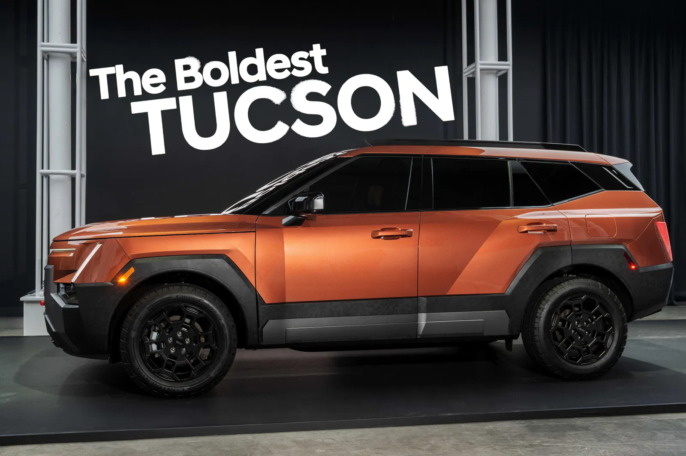
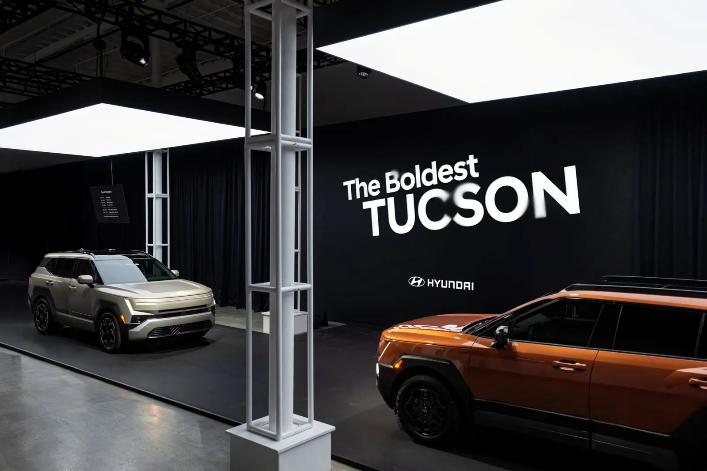
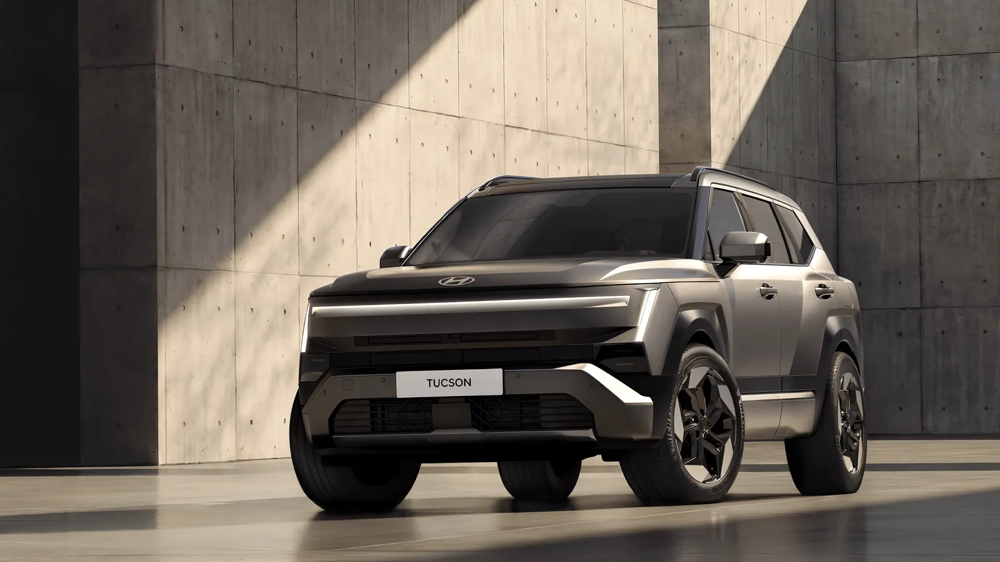
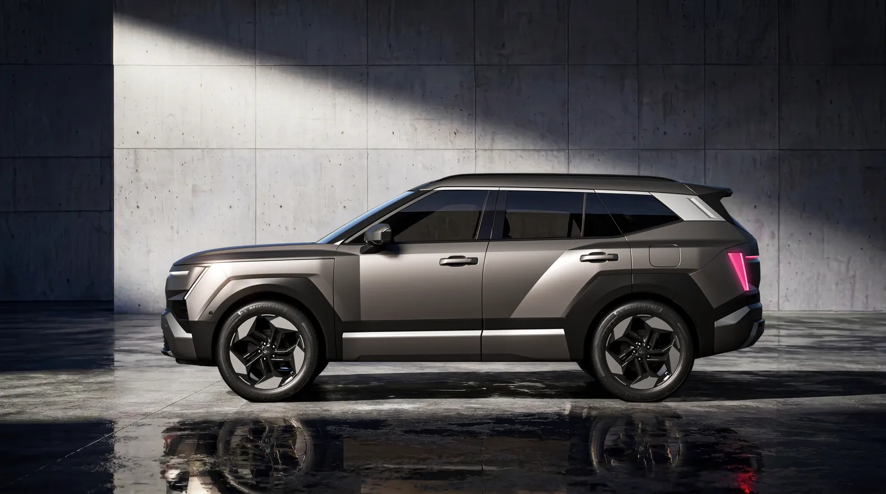
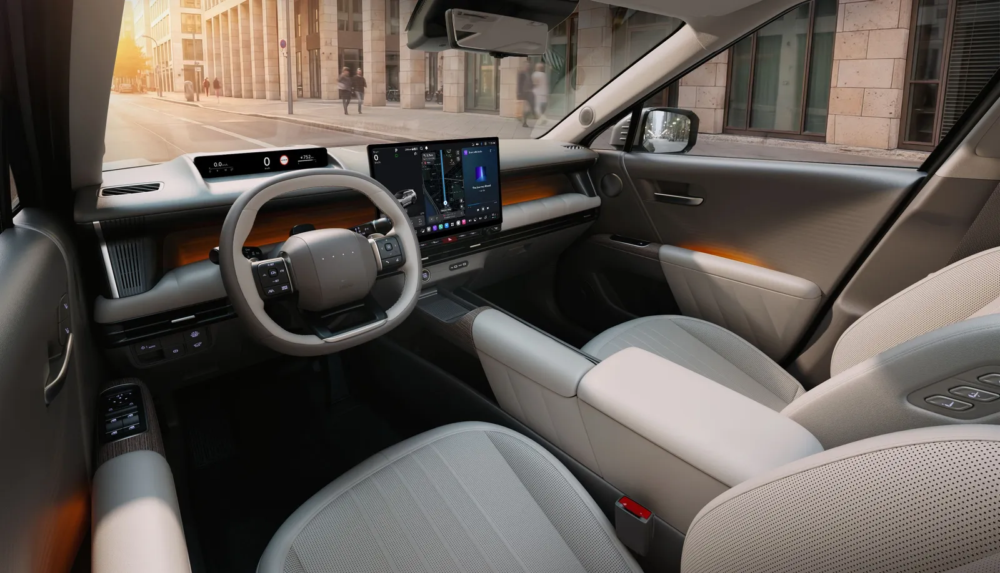
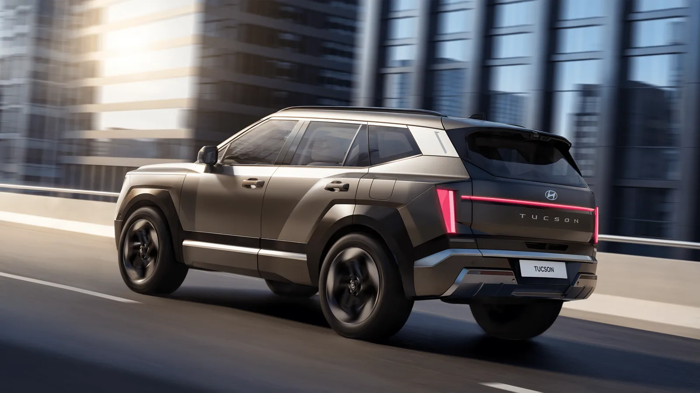
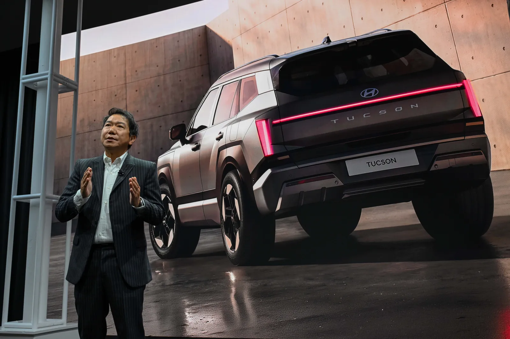

▲ 10월 1일 뉴욕 월드 프리미어 행사에서 맨해튼 스카이라인을 배경으로 선 신형 투싼 ⓒ 현대자동차
현대차가 10월 1일(현지시간 오후 5시 15분, 한국시간 2일 오전 6시 15분) 뉴욕에서 5세대 '디 올 뉴 투싼' 월드 프리미어를 열었다. 디자인과 핵심 숫자는 이미 9월 18일 국내 공개 때 나왔지만, 뉴욕 행사와 함께 올라온 현대차 글로벌 뉴스룸 보도자료에는 전고·최저지상고·적재공간·실내 치수·안전 사양까지 훨씬 촘촘한 제원표가 담겼다. 이 기사는 디자인을 다시 설명하지 않고, 월드 프리미어에서 공식 확정된 숫자 가운데 한국 소비자가 가격표를 받기 전에 알아둘 것만 추렸다. 디자인과 가격 전망은 5세대 투싼 공개 기사와 히든 램프를 버린 디자인 기사에서 먼저 다뤘다.
1. 뉴욕 무대에서 확인된 것 — 한국 출시가 먼저, 북미는 내년
현대차 글로벌 뉴스룸은 신형 투싼을 "가장 대담한 SUV"로 소개하며 뉴욕 맨해튼 스카이라인을 배경으로 월드 프리미어를 열었다고 밝혔다. 국내 매체 보도에 따르면 호세 무뇨스 사장은 "이번 투싼은 우리가 만든 투싼 가운데 최고"라는 취지로 말하며, 투싼을 시작으로 2030년까지 전 세계에서 신차·부분변경 100종 이상, 이 가운데 북미 58종을 내놓겠다고 밝혔다.

▲ 월드 프리미어 무대의 "The Boldest TUCSON" 문구와 오렌지색 신형 투싼 ⓒ 현대자동차
| 시장 | 일정 | 근거 |
|---|---|---|
| 한국 | 2026년 10월 중 가격 공개·판매 예정(9월 18일 국내 공개 행사 이후) | 현대차 국내 보도자료·복수 매체. 영문 뉴스룸은 "올해 후반(Later in 2026) 한국 출시"로만 표기 |
| 북미·유럽 등 | 2027년 순차 출시 | 현대차 글로벌 뉴스룸 |
| 유럽 사양·스포츠 변형 | 10월 12일 파리 모터쇼에서 공개 예정 | 현대차 글로벌 뉴스룸("새 스포츠 지향 변형" 표현, 세부는 미공개) |
| 북미 전용 XRT PRO | 월드 프리미어에서 공개(AWD·지상고 210mm) | 현대차 글로벌 뉴스룸. 북미 한정 사양으로 표기 |

▲ 무대에는 은회색과 오렌지색 두 대가 나란히 전시됐다. 국내 보도자료는 외장 색상을 신규 5종 포함 총 8가지로 소개했다 ⓒ 현대자동차
한국 독자에게 의미 있는 대목은 순서다. 현대차 자료와 국내 보도 모두 한국이 먼저 출시되고 북미·유럽은 2027년으로 잡혀 있다. 글로벌 누적 판매가 1,110만 대를 넘었다는 현대차 설명은 투싼 누적 1000만 대 기사에서 따로 정리했고, 미국 판매 비중과 하이브리드 이야기는 미국 출시 기사가 담당한다. 아래부터는 한국 라인업 중심으로 본다.
2. 차체 — 공식 제원표로 확정된 숫자들
보도자료 제원표는 롱휠베이스(LWB) 기준으로 전장 4,700mm(+60mm), 전폭 1,905mm(+40mm), 전고 1,685mm(+20mm), 휠베이스 2,785mm(+30mm)를 적었다. 전폭에는 "세그먼트 최대 증가폭"이라는 설명이 붙었다. 일부 보도(뉴스웍스)는 전폭을 1,900mm로 적었지만, 현대차 공식 자료와 다른 매체들은 1,905mm로 일치한다.
| 항목 | 수치 | 4세대 대비 / 비고 |
|---|---|---|
| 전장 | 4,700mm | +60mm |
| 전폭 | 1,905mm | +40mm |
| 전고 | 1,685mm | +20mm(루프랙 장착 시 1,700mm) |
| 휠베이스 | 2,785mm | +30mm |
| 최저지상고 | 180mm(일반) | XRT PRO는 210mm(+30mm), 북미 한정 |
| 앞·뒤 오버행 | 915mm / 1,000mm | - |
| 최대 타이어 | 235/50R20 | 휠 옵션 17·18·19·20인치 |
| 도어 개방각 | 83도 | 기존 73도에서 +10도 |
디자인 쪽에서 새로 확인된 것은 조명이다. 앞은 간접 중앙 조명과 가장자리 조명을 합친 'H-엣지 라이팅', 뒤는 프리즘 리어 램프이며, 선택 사양으로 LED 2만 5,600개 화소의 '마이크로 픽셀 라이팅(MPL)'이 소개됐다. 다만 MPL의 국내 적용 여부는 이번 자료에서 확인하지 못했다. 외장 색상은 공식 표에 세레니티 화이트 펄·레인저 그린 펄·코디악 블루 펄·드리프트우드 그레이 메탈릭·레드 록 오렌지 펄이 올랐고, 북미 사양 기준이라는 각주가 붙었다. 국내 보도자료는 신규 5종을 포함해 총 8가지 색상이라고 밝혔다.
국내 보도자료에는 공력 수치도 있다. 현대차는 가솔린·하이브리드 모델의 공기저항계수(Cd)를 기존 0.33에서 0.30으로 낮췄다고 밝혔다. 같은 자료는 내장 색상을 기존 블랙 모노톤에 머드그레이/도브 그레이, 블랙/샌드베이지, 블랙/인레이 소일 브라운 3종을 새로 더해 총 4종으로 운영한다고 적었다. 공력 개선분이 실제 연비에 얼마나 기여했는지는 자료에 나와 있지 않아 확인하지 못했다.

▲ 신형 투싼 전면. 가로로 뻗은 라이트 바와 각진 범퍼 하단 처리가 특징이다 ⓒ 현대자동차

▲ 신형 투싼의 측면. 근육질 펜더와 절제된 도어 면 처리를 "아트 오브 스틸"의 특징으로 설명했다 ⓒ 현대자동차
3. 실내·적재공간 — 숫자로 본 2열과 트렁크
실내 치수는 이번 자료에서 가장 많이 늘어난 정보다. 1열 헤드룸은 1,036mm(선루프 장착 시 990mm), 2열 헤드룸은 1,031mm(선루프 시 1,003mm)다. 국내 보도자료는 이 2열 헤드룸이 기존보다 29mm 늘어난 수치라고 밝혔다. 레그룸은 1열 1,052mm, 2열 1,064mm, 숄더룸은 1열 1,470mm, 2열 1,428mm로 표기됐다. 뒷좌석은 6:4 분할 폴딩이며, 적재공간은 1,067L(글로벌 제원표는 41.7입방피트를 병기하나 환산하면 약 1,181L라 서로 다른 측정 기준일 수 있어, 어느 쪽이 국내 기준인지는 확인하지 못했다)다. 국내 공개 때 "기존 대비 +22L"로 알려진 수치와 같은 기준인지는 이번 자료에서 따로 확인하지 못했다.
| 구분 | 1열 | 2열 |
|---|---|---|
| 헤드룸 | 1,036(선루프 990) | 1,031(선루프 1,003) |
| 레그룸 | 1,052 | 1,064 |
| 숄더룸 | 1,470 | 1,428 |
| 시트 높이 | 314 | 357(ICE·HEV) |
구성 면에서는 상단과 하단을 나눈 2단 구조의 대시보드, 스티어링 컬럼 위의 9.9인치 슬림 디스플레이, 중앙 화면 아래의 물리 버튼이 소개됐다. 듀얼 15W 무선 충전 패드(선택), 시트백 100W USB-C 고속 충전, 13.5V 금속 코팅 열선 유리(15분 만에 성에 제거, 태양 에너지 차단률 60%)가 목록에 올랐고, 기어는 스티어링 컬럼의 시프트 바이 와이어(SBW) 레버다.

▲ 신형 투싼 실내. 스티어링 휠 위 슬림 디스플레이와 중앙 화면을 나란히 배치한 대시보드 ⓒ 현대자동차
📍 숏휠베이스(SWB) 사양 표기에 주의
보도자료 각주에 따르면 7셀 공압 요추·마사지 '에르고 모션 시트', 한 번에 10도 눕는 '릴랙세이션 컴포트 시트', 3존 공조, 열선 유리, 트레일러 후진 보조는 숏휠베이스 한정이며 북미에는 판매되지 않는 사양이다. 국내 판매 모델에 어느 사양이 들어가는지는 가격표와 트림 구성이 나와야 확인된다. 국내 보도자료 기준으로 확인된 것은 서라운드 뷰 모니터와 그라운드 뷰 기능이다.
4. 한국 라인업 — 가솔린 12.2km/L, 하이브리드 17.4km/L
국내 판매 파워트레인은 1.6 터보 가솔린과 1.6 터보 하이브리드 2종이다. 오토뷰 등 국내 보도와 현대차 제원표를 종합하면 수치는 아래와 같다.
| 구분 | 1.6 터보 가솔린 | 1.6 터보 하이브리드 |
|---|---|---|
| 최고출력 | 193PS(+13PS) | 시스템 245PS |
| 최대토크 | 27.0kgf·m | 38.7kgf·m |
| 변속기 | 8단 자동(기존 7단 DCT 대체) | - |
| 복합연비(국내) | 12.2km/L | 17.4km/L(기존 대비 +1.2km/L) |
| 특징 | 통합 전동 워터 펌프(EWP) | P1+P2 모터, 스테이 모드, E-트랙션 |
하이브리드에는 시동을 끈 채 에어컨·히터·오디오·기기 충전을 쓰는 '스테이 모드'가 클래스 최초 사양으로 소개됐고, 코너링 때 안쪽 바퀴의 슬립을 줄이는 'E-트랙션'은 하이브리드 전용이다. 8단 자동변속기와 하이브리드 구조의 의미는 8단 자동 변속기 기사와 하이브리드 인증 기사에서 풀었다.
같은 제원표에는 플러그인 하이브리드(PHEV)도 올라 있다. 1.6 터보와 조합해 시스템 292PS·38.7kgf·m, 배터리 17.1kWh, 전기 주행거리 81km(50마일), 7.2kW 온보드 충전기라는 수치다. 다만 각주는 "일부 시장 한정"이라고만 적었고, 국내 PHEV 출시 계획은 이번 자료에서 확인하지 못했다. 북미 하이브리드 수치(233마력, 42mpg 목표)는 미국 사양이므로 한국 연비와 직접 비교하지 않는다.

▲ 도심을 달리는 신형 투싼 후측면. 프리즘 리어 램프가 가로로 이어진다 ⓒ 현대자동차
5. 플레오스 커넥트·글레오 AI — 무엇이 바뀌었나
현대차는 신형 투싼에 안드로이드 오토모티브 OS(AAOS) 기반 인포테인먼트 '플레오스 커넥트'를 얹는다. 국내 보도자료는 이를 현대차 SUV 최초라고 밝혔다. 뉴욕 자료에는 17인치 또는 12.9인치 메인 터치스크린과 9.9인치 슬림 디스플레이 조합, 세 손가락 제스처, 넓은 단일 화면 모드, 서드파티 앱 직접 연동, 무선 업데이트(OTA)가 적혔다. 예시 질문은 "30분 안에 갈 수 있는 주차 가능한 등산로 입구 찾아줘"였다.
▲ 월드 프리미어 발표 화면의 Gleo AI 로고. 대화 맥락을 이해하는 에이전트형 AI로 소개했다 ⓒ 현대자동차
대형언어모델(LLM) 기반 AI 에이전트의 이름은 국내 표기로 '글레오 AI', 영문 자료에는 Gleo AI로 적혔다. 다만 공식 각주는 "서비스명, 기능, 도입 시기는 시장·모델·트림에 따라 다를 수 있다"고 밝혔다. 한국에서 음성 비서가 어느 범위까지, 어떤 앱 마켓 구성으로 제공될지는 이번 자료만으로 확인되지 않는다. 이전 공개 때의 플레오스 앱마켓 소개는 5세대 투싼 공개 기사를 참고할 수 있다.
6. 안전·ADAS — 국내 9에어백 기본, 확인된 것만
안전 사양은 공식 제원표와 국내 보도자료를 나눠 읽어야 한다. 국내 보도자료는 9개 에어백 기본 적용, '도어 언락 전원 이중화'(현대차 최초), 페달 오조작 안전 보조, 전방 주차 충돌방지 보조(PCA-F), '기억 후진 보조'(동급 최초)를 꼽았다. 글로벌 제원표에는 구조와 운전자 보조 항목이 추가됐다.
| 항목 | 내용 | 출처·비고 |
|---|---|---|
| 에어백 | 9개 기본(국내) | 현대차 국내 보도자료 |
| 차체 구조 | 핫스탬핑 고강도 강판 적용, 2.0mm 보강 센터 필러, 앞 오버행 +20mm(보행자 보호) | 글로벌 제원표 |
| 운전자 모니터링 | ICMU(운전자 눈·졸음 감지), 어린이 감지(CPD)·후석 승객 알림(ROA) | 글로벌 뉴스룸 |
| 주행 보조 | 스톱앤고 SCC, 차로 유지(LFA), 비상 정지 포함 레벨 2+, ISLA, 내비 연동 NSCC | 글로벌 제원표, 시장별 적용 상이 |
| 주차·시야 | 기억 후진 보조(MRA, 최대 30km/h 기록), 그라운드 뷰 모니터(GVM) | 글로벌 뉴스룸·국내 보도자료 |
| 오프로드 | 스마트 터레인 어시스트(STA), 타깃 스피드 컨트롤(2~25km/h) | XRT PRO 한정(북미) |
보도자료는 "사양의 적용 여부는 지역·모델·사양에 따라 다를 수 있다"고 별도 명시했다. 위 항목 중 국내 트림별 기본·선택 구분은 확인되지 않았다. 목표 안전 등급으로는 NHTSA 5성, IIHS TSP+, 유로 NCAP 5성 등이 나열됐지만 실제 평가 결과가 아니라 목표치다.

▲ 월드 프리미어 무대에 전시된 신형 투싼 후면. 테일램프는 전 라인업 LED 표준으로 적혔다 ⓒ 현대자동차
북미 한정 XRT PRO도 이번에 함께 공개됐다. 최저지상고 210mm(일반형 180mm), AWD, 오프로드용 스마트 터레인 어시스트와 2~25km/h 타깃 스피드 컨트롤이 붙는다. 국내 보도에서 별도 XRT 트림 운영이 언급된 만큼 한국형이 이 사양을 그대로 따를지는 가격표와 트림 구성이 나와야 확인된다(현재까지 확인하지 못했다).
▲ 북미 한정으로 공개된 투싼 XRT PRO. 지상고를 210mm로 높인 오프로드 지향 사양이다 ⓒ 현대자동차
7. 가격은 아직 — 스포티지와 어떻게 맞붙나
현대차는 국내 가격을 10월 중 공개한다고만 밝혔고, 이번 월드 프리미어에서도 한국 가격은 나오지 않았다. 카프리즘 기존 기사에서 다룬 업계 전망은 기존 대비 약 300만 원 인상 가능성, 5,000만 원 선 근접 가능성 등으로 엇갈린다(모두 추정이며 확정 아님). 가격 논쟁의 배경은 신형 투싼 가격 딜레마 기사에 정리했다.
| 항목 | 투싼(신형) | 기아 스포티지(현행) |
|---|---|---|
| 국내 판매(2026년 9월) | 월별 수치 확인 못 함 | 5,497대(국산차 5사 9월 실적 보도) |
| 공식 가격 | 10월 중 공개 예정 | 본 기사에서는 다루지 않음 |
| 전장·전폭 | 4,700mm·1,905mm | 확인된 수치만 쓰기 위해 비교 생략 |
스포티지와의 체급·가격 비교는 투싼 vs 스포티지 재비교 기사에서 따로 계산했다. 이번 기사에서 확정된 비교 근거는 9월 스포티지 국내 판매 5,497대라는 판매 실적뿐이다. 구형 투싼은 신차 대기 수요 때문에 판매가 빠졌고, 올해 1~8월 국내 판매는 2만2,384대로 전년 동기 대비 35.2% 줄었다는 점은 앞선 기사에서 확인했다.
공식 뉴스룸 원문은 아래에서 직접 볼 수 있다. 현대차 글로벌 뉴스룸 바로가기 국내 공개 보도자료는 현대차그룹 한국어 뉴스룸에서 확인 가능하다. 국내 보도자료 바로가기
8. 이번에도 확인되지 않은 것들 — 가격표가 나오면 볼 항목
| 항목 | 현재 상태 |
|---|---|
| 국내 가격·트림 구성 | 미공개(10월 중 예정) |
| 사전계약 일정 | 공식 일정 확인 못 함 |
| 공력 개선의 연비 기여도 | Cd 0.33→0.30은 확인, 연비 기여분은 확인 못 함 |
| 국내 PHEV 출시 | 자료에 수치는 있으나 국내 계획은 확인 못 함 |
| 국내 XRT 트림 세부 | 국내 별도 XRT 트림 운영은 보도되었으나 사양 세부 확인 못 함 |
| MPL·에르고 모션 시트 등 국내 적용 | 숏휠베이스·선택 사양 표기, 국내 적용 여부 확인 못 함 |
| 공식 영문 표기 | 글로벌 뉴스룸은 한국 출시를 "올해 안"으로 표기, 국내 보도는 10월 중 |
✅ 계약 전 점검 체크리스트
- 전폭 1,905mm이므로 아파트 지하주차장·기계식 주차장 제한 폭을 먼저 확인
- 가솔린 12.2km/L와 하이브리드 17.4km/L는 공인 복합연비(하이브리드는 17인치 휠·2WD 기준 보도)이므로, 20인치 휠 선택 시 달라질 수 있음
- 글레오 AI·플레오스 앱마켓의 국내 서비스 범위는 가격표 공개 때 함께 확인
- 숏휠베이스 한정 사양(마사지 시트, 3존 공조 등)이 국내 트림에 들어가는지 확인
9. 요약
월드 프리미어에서 공식 확정된 한국 관련 수치는 차체 4,700×1,905×1,685mm(휠베이스 2,785mm), 적재공간 1,067L(국내 SAE), 1.6 터보 가솔린 193PS(12.2km/L)와 하이브리드 시스템 245PS(17.4km/L)다. 실내는 2열 헤드룸 1,031mm·레그룸 1,064mm, 도어 개방각 83도로 정리됐다.
디지털·안전 면에서는 AAOS 기반 플레오스 커넥트와 글레오 AI, 국내 9에어백 기본, 기억 후진 보조·그라운드 뷰 같은 클래스 최초 사양이 핵심이다. 다만 일부 사양은 숏휠베이스·북미·일부 시장 한정으로 표기돼 국내 적용 여부는 가격표가 나와야 알 수 있다.
가격과 사전계약 일정은 아직 공식 발표가 없다. 국내는 10월 중 가격 공개·판매, 북미·유럽은 2027년이다. 가격 전망은 모두 추정이며, 스포티지(9월 국내 5,497대)와의 정면 비교는 가격표를 확인한 뒤에야 의미가 생긴다.